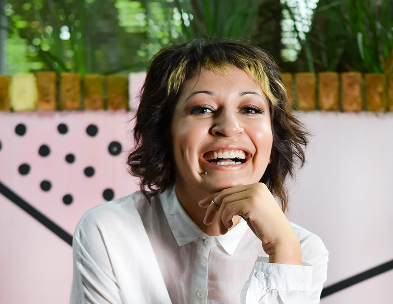
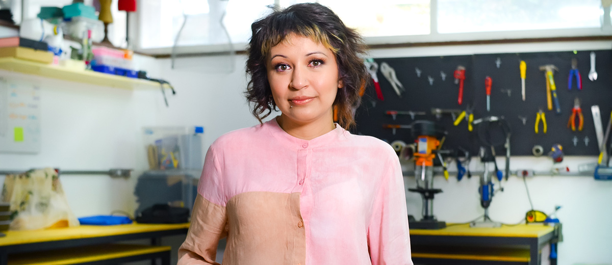
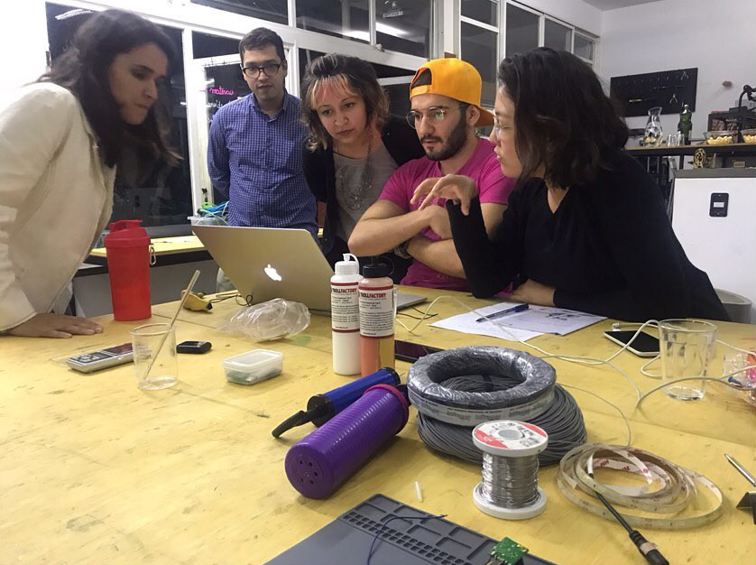
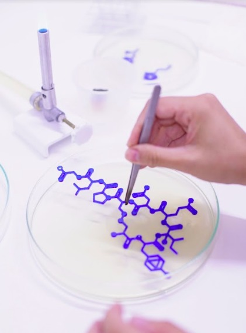
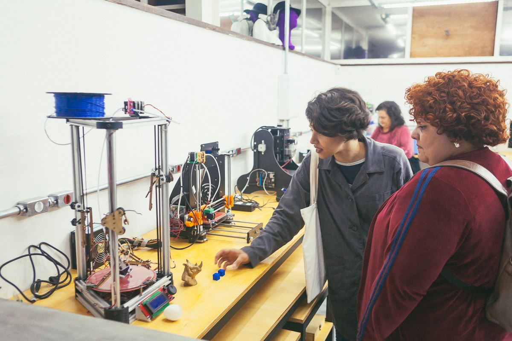
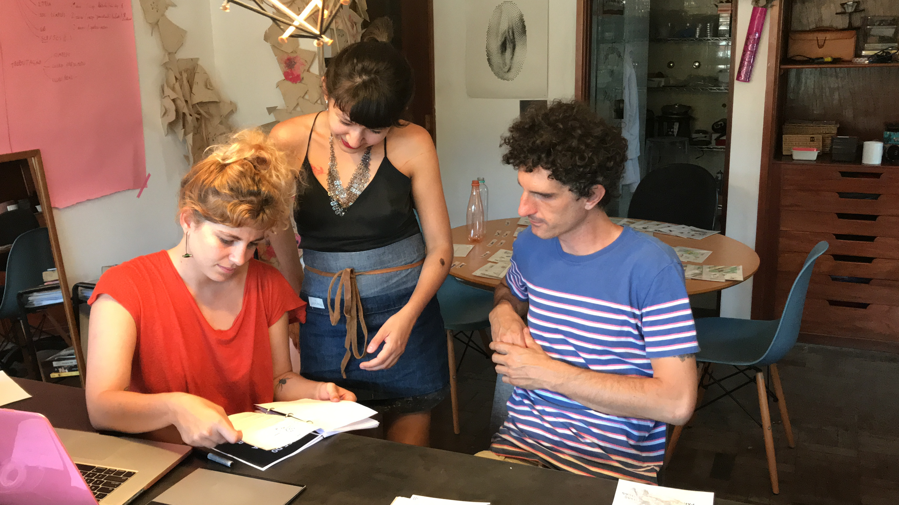

About Me
Hi! I'm Lina Lopes.
Brazilian, woman, artist and mother of a 6 year old girl. The rest of the time, I lead LILO.ZONE, a space for technology and innovation in São Paulo.
I usually use these four words when someone asks me “why” or “how” I do what I do. I think work with technology in a creative way that requires a kind of parallax point of view. Everything is there, we just need observation, imagination and openness.

Mini Bio
Lina Lopes is a consultant, entrepreneur and artist. She expresses in her trajectory the intersection between two worlds: art and technology. Graduated in Cinema by University of São Paulo and Master in Design by Anhembi-Morumbi College, she has an interdisciplinary background that also includes theater, engineering and computing.
She has extensive experience in projects, working on the themes of parametric and generative design, video mapping, interactivity, Arduino programming, wearables, internet of things, biomaterials, among others. She is a speaker on innovation and mentor of bootcamps. Directs LILO.ZONE, space for creative use of technology and is at the forefront of the LILO.THINK initiative focused on immersive processes. She is enthusiastic of experimentation, collaboration and improvisation.
In the wearables area, she has experience in research and prototyping projects with flexible conductive materials, pneumatic / soft robotics systems and biomaterials. In 2016, she realized the Touch Skin project, an artistic-scientific residence in the Media Lab of UFG to develop a temporary conductive tattoo, where she entered the universe of science and biological materials. In 2018 she founded BioLiLoLab, a biohacking laboratory within LILO.ZONE, where she is conducting research projects in biomaterials and bioart.

Contact
Address
R. João Moura, 2152 - Pinheiros,São Paulo - SP, 05412-004, Brasil
+55 11 948 997 972
lina@lilo.zone
Social
Services
This site is about my artistic investigations. But if you happen to be interested in any of my enterprises here is a short presentation about them.

LILO.THINK
INNOVATION CONSULTING
LILO.THINK is a bespoke innovation consultancy. We work with immersive processes such as Design Sprints, where we assemble a team of specialists to solve a problem with the customer in order to obtain a final prototype. We also provide lectures and training in the areas of innovation, emerging technologies and Smart Cities.
SERVICES: Consulting, Design Sprint, Lectures, Training

BioLiloLab
SCIENCE AND ART
BioLiloLab is an independent laboratory for experiments in biomaterials, biohacking and bioart. It has basic infrastructure for working with microbiology and molecular biology, including PCR equipment, electrophoresis, spectrophotometer, etc. It is available for resident scientific projects and also receives study groups such as Microbiology for Artists.
SERVICES Residence, Mentoring, Training

LILO.ZONE
PROTOTYPING SPACE
LILO.ZONE is a shared workspace for projects using creative and innovative technology. It is a house in Vila Madalena in São Paulo that provides complete digital manufacturing infrastructure with Maker Space and Laser Cutter, as well as space for events and a rich community of experts in technology, innovation and creativity. It houses fixed initiatives and receives invited projects.
SERVICES Prototyping, Leasing of workspaces (Maker Space, Salona, Laser Cutter), Mentoring, Training, Open events.

NANA
WEAREABLES LAB + NANAKIT
Wearables Lab is linked to the LILO.ZONE Maker Space and has tools for working with wearable technologies, such as sewing machines, electronics kits, etc. The Nana Kit is a modular kit for beginners to prototype in wearables without the need for prior knowledge. It has an ideation methodology and open tutorials available on the website.
SERVICES Workshops, Lectures, Training, Mentoring.

zucchini
PUBLISHER AND CONTENT PRODUCER
Zucchini is a producer and content maker platform that works on structuring, producing and publishing printed and digital materials. Receives projects on the themes of design, innovation and technology. It is made up of a publisher (Zucchini.Press), and a video platform and soon online courses (Zucchini.Video).
SERVICES Publishing (Writing, graphic design, review and production), Video production, Online platform.